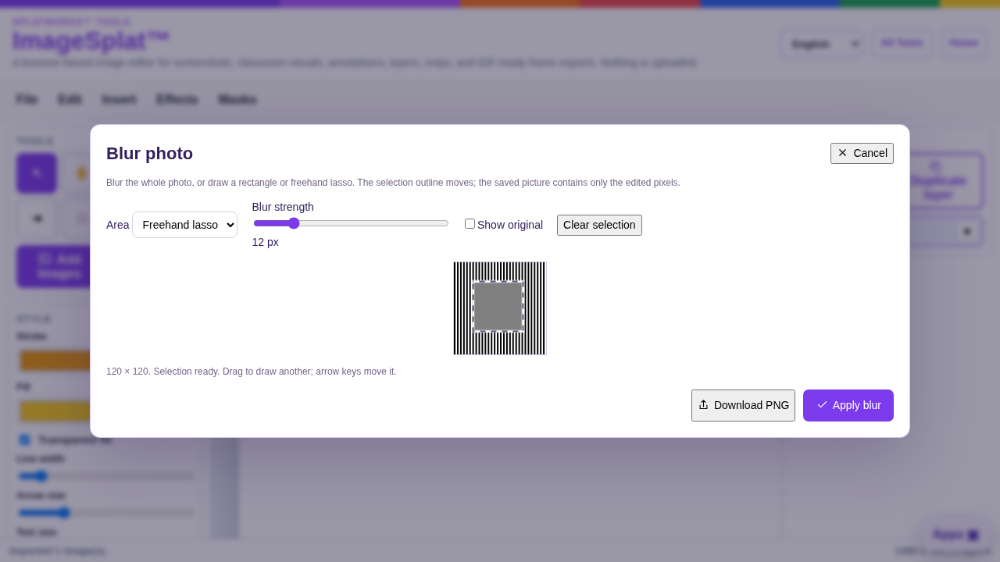
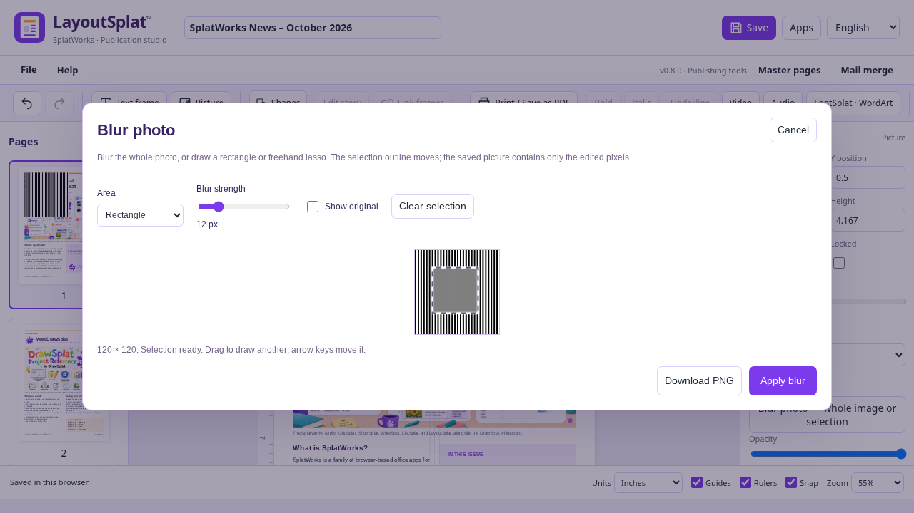

Blur a whole photo or a selected area
ImageSplat and LayoutSplat share the same local photo-blur editor. Choose a still image, then open Effects → Blur photo · selection / lasso in ImageSplat, or Blur photo — whole image or selection in LayoutSplat's picture properties or picture context menu.
Choose Whole photo, Rectangle, or Freehand lasso. For a partial blur, drag over the image; a lasso closes its shape when you release the pointer. The marching-ants outline shows the affected region. Drag again to redraw it, or Clear selection. Arrow keys move a selection by one pixel; Shift moves by 10. Delete clears it. Adjust Blur strength and use Show original to compare.
Apply blur changes only the selected image. Rectangle/lasso mode requires a drawn selection. Cancel leaves the image unchanged, and the app's Undo can restore the earlier image after applying. LayoutSplat keeps the frame position, size, rotation, fit and crop. Other objects that use the same source picture keep their own image until you edit them.
Download PNG saves the edited picture directly. Blurring is baked into its pixels, so it carries into image exports, native projects, HTML, PDF and EPUB; it does not rely on a removable CSS filter. Native undo/history and separately retained source editions still follow the app's normal editing behavior.
Large photos are proportionally resized to a maximum 16-megapixel working image and a 16,384-pixel longest edge; the editor reports the working dimensions. Processing stays on the device. LayoutSplat's audio/video players remain separate from their print posters; choose a still photo for this feature.

